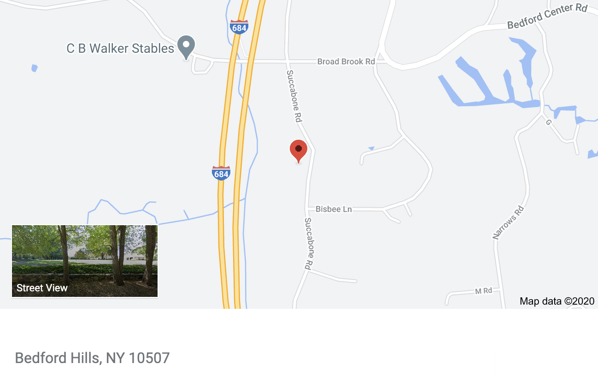

Valence 7
About Val
Valence 7 is an 18 year old warm blood from Germany. He has a spunky personality and will never fail to make you laugh. He is great with kids, adults, dogs, and other horses. He loves to go to competitions and is always game for long walks and grazes. You can find more important information further down the page or you contact the owner. Contact information can be found at the bottom of the page as well.
Contact Information
If you are interested and want more information on Valence 7 please contact Cheryl Fischer at her website
Information
- USEF ID: 5261777
- DOB: 6/17/2002
- Age: 18
- Breed: Dutch Warmblood
- Color: Dark Bay
- Size: 16 Hands
- Stars: 1
- Socks: None
- Sex: Gelding
- Sire: Andiamo
- Dam: Miss Quickstar
- Breeder: P. Kerckhoffs
- Previous Owner: Lauren Fischer
- Stabled: Fischer Enterprises (NY)
- Availability: lessons & half lease
Location
Valence 7 is located on a small farm in Bedford Hills, NY. He has lived at the Fischer Enterprise Farm (Westchester) for seven years. In the past he would spend his winters in Florida competing in the Winter Equestrian Festival but has spent the last three in New York. Fischer Enterprises is a private farm owned by Cheryl Fischer.